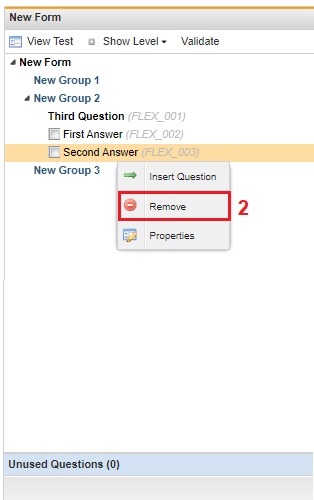
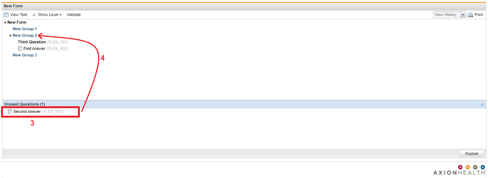

When deleting an answer from an existing form there are factors to consider such as:
Is the question live?
If it is, there might be data stored from the answers that are connected to the question.
You need to check and make sure that it is okay to delete.
Is the question tied to a report?
Cannot delete the answer if it is because it will break the report.
Does the answer have Notif Text?
If so then you will be deleting that Notif text and that could potentially cause some problems.
Does the answer link to another group?
You will be breaking that link if you delete that answer
You either:
Should not delete the answer
Or find another answer to link to open that group
To Delete an Answer from an Existing Form
Right click on the question. A menu appears.

Click Remove.

The removed question will be moved to the ‘Unused Questions’ section at the bottom of the screen.
To re-use a removed question, simply click and drag the question to the group you want the question in. Then you can re-arrange it to go in the order you want it to show.